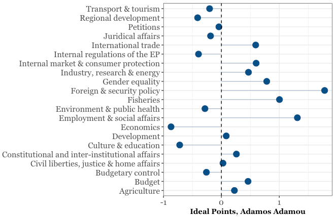

Rob McDonnell:Blog
About
Categories
All
(41)
Bayesian stats
(1)
IRT
(3)
MCMC
(2)
R
(5)
Stan
(3)
blogging
(2)
dataViz
(17)
docker
(1)
economics
(3)
gatsby.js
(1)
modelling
(2)
package management
(1)
political science
(7)
politics
(2)
python
(2)
rmarkdown
(3)
webscraping
(2)
Uk Elections 2024
political science
Well I did say I’d do another one of these come the next UK election, so here goes. The official data won’t be published until Friday the 12th of July but we can use our…
Jul 5, 2024
How wet was winter 2023/2024?
I’m back! It’s been years since I blogged on here. There are many reasons for that, being busy is a big one, kid, job etc.Getting a new laptop recently has renewed my…
May 4, 2024
modelscript
modelling
{modelscript}
is a little RStudio add-in I wrote to help me with modelling. I’ve been testing out the tidymodels framework for R (fantastic, btw) and I thought it would be…
Jun 8, 2020
What do the mtcars actually look like?
dataViz
It popped into my head the other day that I had no idea what most of the cars in the mtcars dataset look like. Some Google image searches later, I had a folder of them (you…
May 2, 2020
Render RMarkdown Code Chunks Based on Output Document Type
rmarkdown
RMarkdown users ‚Äì did you know you can render code chunks based on the type of output you want to produce? It‚Äôs even easy-peasy ü§ì
Apr 26, 2020
From R to Gatsby
gatsby.js
blogging
I don’t use Gatsby or JavaScript for this blog anymore, but this post is here for posterity anyway.
Mar 12, 2020
Images as column headers in R
dataViz
Have you ever wanted to include an image as a column header in a data frame? Of course you have!
Mar 1, 2020
One liner to show all colours available in R
dataViz
Some years ago, I came across a great little repo that contained R code to display all the colours available in R. You can source it as so:
Feb 28, 2020
Using Docker for Data Science
docker
R
python
In this post, I’ll go through a few examples of how you can use Docker for data science, from running a simple script to making reports. It’s based on real usage, so I think…
Feb 8, 2020
Brazilian Legislative Data with congressbr
dataViz
political science
Recently, a paper by myself and two friends was published in the Latin American Research Review (you can read it here). As we write in the paper:
Jan 17, 2020
UK Elections 2019
political science
dataViz
After the UK elections in 2017, I posted about how easy it was to plot the results in R. Given that the UK just had another election, I thought I’d update that post with…
Dec 13, 2019
Easily Use Python and R together with {reticulate}
R
python
I work in an environment where R and Python are used interchangeably, and most of the data scientists here have some familiarity with both languages. We regularly use one…
Nov 27, 2019
Taking RStudio’s renv for a spin
package management
I’ve been working on a project recently where we’ve been building a data analysis pipeline that involves bits of R code and bits of Python. Since the whole thing runs on…
Aug 17, 2019
Improving your DataViz
dataViz
import SimpleBarChart from “../graphs/SimpleBarChart.js” import data from “../data/divorceTurnout2019.json”
Jul 23, 2019
Visualizing the Irish Divorce Referendum in R
dataViz
politics
A while ago, I wrote a blog post on visualizing the results of the UK elections in 2017 (quite a while ago!). After the Irish elections and divorce referendum on Friday…
May 27, 2019
Shuffling Strings in R
R
Let’s say you need to share some data that has some potentially identifiable sensitive information in it – people’s addresses, phone numbers etc. Maybe these fields are not…
May 14, 2019
Avoiding the tiresome training & test data split
modelling
I really don’t like splitting data into ‘train’ and ‘test’. I don’t mean that I’m against the idea of it, though you could say it’s a waste of data that could be used to…
Sep 3, 2018
Mapping Economic Partners with flagfillr
dataViz
economics
üá®üá® üá®üáΩ üáµüáπ üá©üᥠüá´üá≤ üá∞üá∑
Feb 10, 2018
Stan IRT Code
IRT
Stan
(
This turned out to be a bit of a ramble, for the code go here
üòÑ)
Jan 5, 2018
Customize Interactive R Visuals in Power BI
dataViz
Some of us, through no fault of our own, have to work with things like Power BI. While it’s a powerful application, it’s just a little…you know. For anybody who works with…
Dec 1, 2017
Gauge-style plots with ggplot2
dataViz
I’ve been working on a project where the client wanted a “cockpit” style dashboard, with meter/gauge/speedometer type things. Even though this wasn’t likely to be…
Oct 24, 2017
UK Elections 2017
political science
dataViz
This post is a quickie to show how we can visualize the UK election results with just a few lines of R code. (Really, very few).
1
Sep 27, 2017
Analyzing Prison Data in R
dataViz
political science
My good friend Danilo Freire and I have just finished a little R data package, called prisonbrief. We hope that it will be useful for R users, particularly researchers in…
Jul 28, 2017
TFW you have to copy and paste something into R…
R
From time to time, you might need to copy and paste something into R and turn it into a character string. Maybe it’s something from the output of an error message, or from…
Apr 22, 2017
Update R from inside R
I was just about to update R a while ago when I thought to myself that there must be a way to do this inside of R (RStudio, I mean). A quick Google search brought me to the i…
Mar 16, 2017
Peace, Bread and Data!
dataViz
economics
I really like this image by Tom Burns.
1
The liberal
2
in me appreciates making cheap fun of people who were horribly mistaken (Lenin; Marx, although I don’t mean to slight…
Feb 19, 2017
How to make a GitHub pages blog with RStudio and Hugo
blogging
Update: for some people who may have some issues setting up the blog the way I’ve set out here, see Kate’s helpful comments below.
Feb 1, 2017
Tips and Tricks for R Markdown html
rmarkdown
Here are a couple of little tips and tricks that I’ve picked up for use with RMarkdown html documents (including presentations and notebooks). This post is aimed at the R…
Jan 2, 2017
Suicides in Ireland
politics
The Irish radio station newstalk published this video the other day, in which director and actor Terry McMahon spoke out against the austerity programme running in Ireland…
Dec 21, 2016

Theme-Specific Voting in the European Parliament
dataViz
political science
Since it’s European Statistics Day, I thought I would make a quick post showing how to utilise some of the data that we have on the European Union in R. In particular, I…
Oct 20, 2016
Map-making with R and electionsBR
political science
dataViz
For those interested in Brazilian politics, there’s a great new package called
electionsBR
(those who understand Portuguese can find a post on it here). This package takes…
Oct 9, 2016
Re-creating Plots from The Economist in R and ggplot2
dataViz
economics
The Economist is well known for its graphs and images, and I personally like them a lot. I was doing some work on Brexit when I spied the image above, and thought how much I…
Aug 21, 2016
Inhaling/Boozing Earth
After seeing Nadieh Bremer’s great Breathing Earth infographic, I thought it would be cool to recreate it in R, as you do. Then I saw that it was made from lots of tif…
Aug 14, 2016
Rating R Packages
R
The new rOpenSci package packagemetrics is a new ‘meta’ package for R with info on packages: dependencies, how long issues take to be resolved, how many watchers on GitHub…
Aug 13, 2016
Geo-reference an image in R
dataViz
R is actually great for working with spatial data (for example, see here and here for fantastic graphs and maps made with R), however, you often need data that is
actually…
Aug 13, 2016
Easier web scraping in R
webscraping
In an earlier post, I described some ways in which you can interact with a web browser using R and
RSelenium
. This is ideal when you need to access data through drop-down…
Aug 5, 2016
Bayesian IRT in R and Stan
IRT
Stan
MCMC
This blog post is outdated and the code will not run – for newer, cleaner IRT R code, see this github repo and this blog post.
May 21, 2016
Bayesian Stats: Book Recommendations
Bayesian stats
The first time I came across Bayes’ Theorem
1
, I must admit I was pretty confused. It was in Introductory Statistics by Neil A. Weiss, the course book in a statistics course…
May 3, 2016
Web Navigation in R with RSelenium
webscraping
It goes almost without saying that the internet itself is the richest database available to us. From a 2014 blog post, it was claimed that
every minute
:
Apr 27, 2016
Write your thesis or paper in R Markdown!
rmarkdown
There are many reasons why you would want to use some variant of Markdown for writing, and indeed, posts are common on the net as to why you should.
1
A simple summary of the…
Apr 15, 2016
Stan or JAGS for Bayesian ideal-point IRT?
IRT
Stan
MCMC
Anybody who has ever tried to run even a moderately-sized Bayesian IRT model in R (for ideal points as in the political science literature, or otherwise) will know that…
Apr 13, 2016
No matching items